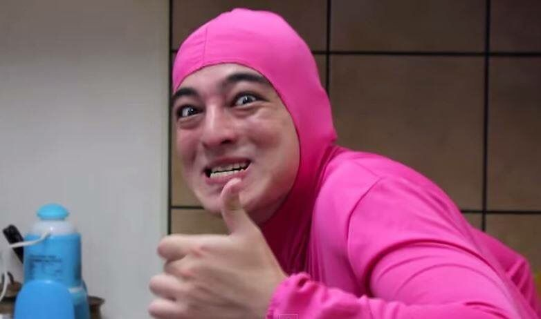
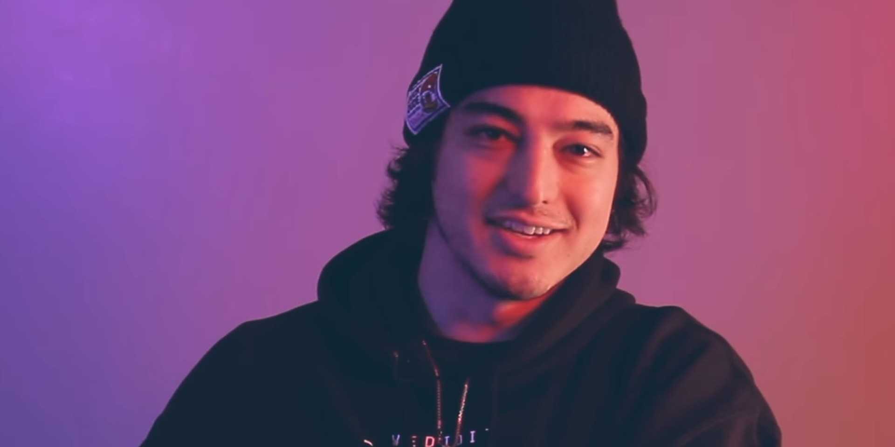

George Kusunoki Miller
Also known as:
Filthy Frank, Pink Guy, Chin Chin, Prometheus, Red Dick, Papa Franku, Real Frank, Francis of the Filth, Professor Filthy Frank, Dr. Marmalade Pigeon Shit, Salamander Man, Safari Man, Mr. Magic Man, Fake Frank, Percy the Pigeon, Santa's Brother, Weeaboo Jones


Filthy Frank
Pink Guy
Joji
Timeline
- Born: September 18, 1992, in Osaka, Japan
- He attended an international school, Canadian Academy, in Kobe, Japan, where he graduated in 2012.
- He is half Japanese and half Australian.
- Filthy Frank A.K.A George Miller started his Filthy Frank character as a result of a bet with his friends, the character first appeared on the youtube account "Dizastamusic" and has gone on to spawn many others such as pink guy and salamander man- whom of which is surprisingly talented at playing the flute with his nose, Filthy frank and George Miller's other characters can be found on the accounts "TVFilthyFrank" and "TooDamnFilthy".
- Miller's videos had widespread impact, which included starting a viral dance craze known as the Harlem Shake back in 2013, which was directly responsible for the debut of Baauer's "Harlem Shake" song atop the Billboard Hot 100.
- He also has a movie called Filthy Frank Final Full Lore Movie that has a IMDb rating of 9.7/10

- Miller always had a passion for music composition. He has expressed that even before his YouTube career, he had an interest in creating music and created his YouTube channel as a means of promoting it. In an interview with Pigeons and Planes, he said, "I've always wanted to make normal music. I just started the YouTube channel to kind of bump my music. But then Filthy Frank and the Pink Guy stuff ended up getting way bigger than I thought so I had to kind of roll with it."
- His debut album, Pink Season, debuted at number 70 on the Billboard 200
- He also produced another album called Pink Season: The Prophecy
- On December 29th, 2017, Miller officially announced in a tweet on his character's account that he's done with his online persona as Filthy Frank
- Aside from the comedic and often rap-based music he created under the Pink Guy alias, Miller also created more serious and traditional music under another stage name, Joji, which became his primary focus in late 2017.
- Joji's music has been described as trip hop and lo-fi that blends elements of trap, folk, electronic, and R&B.
- He produces another 3 albums with the artist name Joji
"You know, a lot of people today are saying that this generation of kids are in fact are[sic] the stupidest.
Now that's debatable. Now I believe there have always been stupid people.
But the internet provides greater opportunity for stupidity to be expressed and paraded. In this day and age with the internet, ignorance is a choice!
AND THEY'RE STILL CHOOSING IGNORANCE."